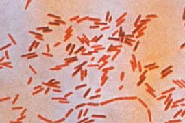
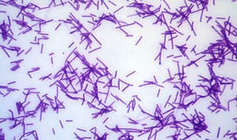
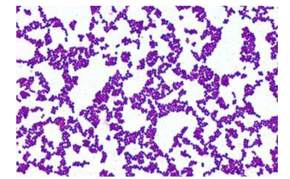

ClinicusMed · Dossiê Clinicus — Padrão de Excelência
Esse é um modelo real de prova P1 de Microbiología (aula da Dra. Santusa), com gabarito completo — casos clínicos integrando bioseguridad, coloração de Gram, meios de cultivo e esterilização. As 3 fotos de microscopia (casos III, IV e V) são reais, do laboratório.
Una Médica de la enfermería del hospital regional de la ciudad se presenta al servicio de salud ocupacional con quejas de fiebre (39,5°C), malestar general y eritema en el sitio de punción venosa del brazo derecho, donde había extraído sangre de un paciente 48 horas antes. Durante el procedimiento, la aguja perforó accidentalmente su guante y causó una pequeña herida en su dedo índice. El paciente en cuestión estaba hospitalizado desde hace 15 días con neumonía asociada a ventilación mecánica y había crecido Staphylococcus aureus resistente a meticilina (MRSA) en cultivos de esputo.
La Médica no utilizaba equipos de protección individual completos. El material usado en la extracción fue desechado inadecuadamente. La esterilización de los materiales reutilizables del hospital presentaba fallas en el control de calidad. Las muestras biológicas fueron enviadas al laboratorio sin los cuidados adecuados de bioseguridad.
| Pergunta | Gabarito |
|---|---|
| A) ¿Qué medidas de bioseguridad fueron atendidas en este caso y cómo podrían haber prevenido la exposición laboral? | La médica solo utilizó guantes, entonces el uso de EPI's estaba incorrecto — la médica debería haber utilizado todos los EPI's. |
| B) ¿Cuáles son los equipos de bioseguridad personal que la técnica debería utilizar? | Guantes, gafas, mascarillas, batas o delantal, toca, etc. |
| C) ¿Cuál sería lo correcto para desechar los materiales contaminados? | Tipo III, punzocortantes — contenedor rígido. |
| D) ¿Cite cuáles métodos de esterilización serían más apropiados para los materiales utilizados en este procedimiento? | Autoclave. |
| Pergunta | Gabarito |
|---|---|
| A) Medio de cultivo selectivo | Inhibe el crecimiento de ciertos microorganismos. Ej: agar manitol. |
| B) Medio de cultivo común | Crece cualquier cosa. |
| C) Describe la estructura principal de la pared celular bacteriana de las Grampositivas y cómo difiere de las Gramnegativas | Gram+ = peptidoglicano más grueso, una capa de membrana. Gram− = peptidoglicano más delgado y doble capa de membrana. |

| Pergunta | Gabarito |
|---|---|
| Tinción de Gram | Gram − |
| Morfología | Bacilos |
| Agrupamiento | Estreptobacilos |
| Cite otros agrupamientos presentes en la imagen | Empalizados / Bacilos aislados |

| Pergunta | Gabarito |
|---|---|
| Tinción de Gram | Gram + |
| Morfología | Bacilos |
| Agrupamiento | Empalizados |
| Cite otros agrupamientos presentes en la imagen | Bacilos aislados |

| Pergunta | Gabarito |
|---|---|
| Tinción de Gram | Gram + |
| Morfología | Cocos |
| Agrupamiento | Estafilococos |
| Cite otros agrupamientos presentes en la imagen | Diplococos |
Una niña de 10 años es llevada al servicio de emergencias con cuadro de fiebre alta (41°C), irritabilidad, vómitos en chorro y rigidez de nuca. Se realizó punción lumbar, que reveló líquido cefalorraquídeo turbio, glicemia disminuida y proteína aumentada.
El examen directo del líquido cefalorraquídeo mostró diplococos gram-positivos encapsulados. La madre relató que la niña frecuenta guardería y que otras criaturas presentaron síntomas respiratorios en la última semana. El laboratorio inició inmediatamente los procedimientos de aislamiento e identificación del agente etiológico.
El laboratorio no poseía cabina de seguridad biológica clase II. Algunos profesionales no siguieron adecuadamente las precauciones para las gotículas. La muestra de líquido cefalorraquídeo fue procesada en la mesa común del laboratorio. No se realizó notificación inmediata a las autoridades sanitarias.
| Cite la: | Gabarito |
|---|---|
| Morfología microscópica | Cocos |
| Agrupamiento | Diplococos |
| Gram más probablemente involucrado en este caso | Gram + |
| Pergunta | Gabarito |
|---|---|
| A) Explique la estructura de la pared bacteriana del caso clínico | Posee una capa más gruesa de peptidoglicano, con envoltura celular simple. |
| B) ¿Qué métodos de esterilización serían apropiados para descontaminación de los materiales utilizados en el procesamiento de esta muestra? | Autoclave, un método de esterilización a base de vapor caliente. |
| C) Describa las precauciones de bioseguridad que el equipo médico debe adoptar en la atención de este paciente | Aislar al paciente, hacer uso completo de los EPI's, lavar las manos, y también notificar inmediatamente a las autoridades sanitarias. |
Una estudiante de enfermería de segundo año está realizando sus prácticas en el servicio de urgencias de un hospital. Durante la toma de una muestra de sangre arterial a un paciente con sospecha de septicemia, se pincha accidentalmente el dedo con la aguja mientras intentaba desecharla en un contenedor de punzocortantes que estaba demasiado lleno. Se quita los guantes, se lava la herida con agua y jabón, y se la cubre con una gasa.
El paciente, que había sido hospitalizado por una complicación de su diabetes no controlada, presenta signos de infección grave. Los hemocultivos posteriores confirmaron que el paciente estaba infectado con Pseudomonas aeruginosa, una bacteria oportunista conocida por su alta resistencia a múltiples antibióticos.
La estudiante, preocupada, informa del incidente a su supervisora 4 horas después del suceso. Al día siguiente, comienza a sentir dolor, enrojecimiento y calor en el sitio de la punción, además de una sensación de malestar general.
| Pergunta | Gabarito |
|---|---|
| A) ¿Cuál fue el principal error que cometió la estudiante al desechar la aguja? | Intentarlo desechar la aguja en un contenedor de punzocortantes que ya estaba lleno. |
| B) ¿Qué riesgos de salud inmediatos enfrenta la estudiante debido a su exposición? | Exposición a hepatitis B y C, HIV. |
| C) ¿Qué pasos debió haber seguido la estudiante inmediatamente después del accidente, según los protocolos de bioseguridad? | Lavar las manos, y comunicar inmediatamente a la supervisora. |
| D) ¿Qué medidas de prevención debieron haberse tomado en el servicio de urgencias para evitar este tipo de accidentes? | Cambiar los recipientes llenos y realizar cursos de capacitación. |
| E) ¿Qué medidas de bioseguridad no fueron realizadas en este caso y cómo pudiéramos prevenir la exposición ocupacional? | Cambiar los recipientes y utilización completa de EPI's. |
| F) ¿Qué métodos de esterilización serían más apropiados para los materiales utilizados en este procedimiento? | Autoclave. |
O sistema guarda, no seu navegador, quais cards você já sabe bem e quais precisam voltar mais cedo — cada vez que você avalia um card, ele recalcula quando ele deve voltar.
10 questões, do mais básico ao mais puxado. Escolhe uma alternativa, depois clica em "Ver comentário completo" — vale a pena ler até quando você acerta, porque o comentário explica cada alternativa, não só a certa.
| Caso | Tema Central | Resposta-Chave |
|---|---|---|
| I | Exposição ocupacional (picada com MRSA) | EPI incompleto, descarte Tipo III, Autoclave |
| II | Definições — meios de cultivo e parede bacteriana | Seletivo × comum; Gram+ × Gram− |
| III | Imagem — Gram−, bacilos | Estreptobacilos (+ empalizados/isolados) |
| IV | Imagem — Gram+, bacilos | Empalizados (+ isolados) |
| V | Imagem — Gram+, cocos | Estafilococos (+ diplococos) |
| VI | Meningite pediátrica | Diplococos Gram+ → pensar em pneumococo |
| VII | Acidente com punzocortante | Lavar + notificar imediatamente, Autoclave |